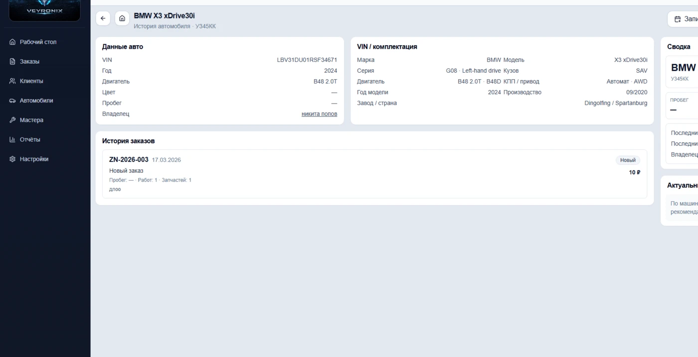

ERP для автосервиса
Сервис работает быстрее, когда запись, заказы и загрузка собраны в одной системе
Veyronix помогает автосервису держать под контролем весь рабочий день: от записи клиента и истории автомобиля до заказ-нарядов, загрузки мастеров и управленческой картины для руководителя.
Сценарий под ваш формат сервиса
Без лишней теории и абстракций
Понятно владельцу, администратору и мастеру
- Запись, клиент, автомобиль и заказ-наряд связаны между собой
- Меньше ручной рутины, потерь информации и хаоса внутри смены
- Загрузка мастеров, постов и точки риска видны в течение дня
Ниже — какие проблемы решает система и как проходит демонстрация
Операционный обзор
Картина смены в реальном времени
Единый рабочий контур
Запись
Клиент
Автомобиль
Заказ-наряд
Мастер
Отчёты

О продукте
ERP для автосервиса, которая собирает запись, исполнение и контроль в одном рабочем контуре
Когда запись ведётся в одном месте, история ремонта в другом, а статус заказа уточняют в звонках и чатах, сервис теряет скорость и контроль. Veyronix собирает ключевые процессы в одну рабочую систему: от первого обращения клиента до заказ-наряда, загрузки мастеров и управленческих отчётов.
Запись
Клиенты
Автомобили
Заказ-наряды
Мастера
Отчёты
Какие проблемы решает Veyronix
Типичные потери автосервиса, которые можно убрать системной организацией работы
Теряются записи и контекст по клиенту
Администратор тратит время на поиск истории, а клиенту приходится заново объяснять ситуацию.
Не видно реальную загрузку постов и мастеров
Руководитель видит перегрузку уже по факту, когда сроки сдвигаются и команда работает в аврале.
Заказы и деньги сложно контролировать в течение дня
Статусы размыты, точки внимания неочевидны, а управленческие решения принимаются с опозданием.
Без системы
- запись в таблицах и мессенджерах
- история автомобиля вспоминается вручную
- статус заказа зависит от конкретного сотрудника
С Veyronix
- вся работа собирается в одном контуре
- по клиенту и автомобилю сразу видна история
- руководитель видит загрузку и точки риска заранее
Что получает сервис
Эффект от внедрения заметен не только в интерфейсе, но и в ежедневной работе сервиса
Меньше ручной рутины
Администратор быстрее открывает нужную карточку, оформляет заказ и не теряет историю клиента между действиями.
Прозрачная работа в течение дня
Понятно, какие машины в работе, кто загружен, где задержка и какие заказы требуют вмешательства сейчас.
Больше управляемости для владельца
Загрузка, повторные визиты, активность клиентов и состояние заказов видны в одной системе, а не собираются вручную.
Как выглядит работа в системе
От записи клиента до контроля результатов
Veyronix строится вокруг реального процесса автосервиса: принять обращение, быстро оформить заказ, видеть историю автомобиля и управлять загрузкой команды.
Запись клиента без потери деталей
Запись фиксируется сразу в системе: кто клиент, на каком автомобиле он приезжает, когда визит и что нужно сделать. Администратор не собирает это по кускам.

Сразу виден удобный слот, занятость и контекст по визиту.
Оформление заказ-наряда в одном месте
Заказ становится центром работы: статусы, работы, комментарии, рекомендации, мастер и связанный автомобиль собраны в одной карточке.

Команда работает не по устным договорённостям, а по общей понятной картине.
История автомобиля и клиента всегда под рукой
В любой момент можно понять, что уже делали по машине, какие были рекомендации, кто обслуживал автомобиль и как часто клиент возвращается.

Это ускоряет обслуживание и снижает зависимость от памяти конкретного сотрудника.
Контроль загрузки и точек риска
Руководитель видит, что происходит прямо сейчас: где перегрузка, какие заказы отстают, какие мастера заняты и где сервис теряет темп.

Отчёты помогают быстрее принимать решения, а не только смотреть на цифры задним числом.
Возможности
Ключевые возможности Veyronix
Единая рабочая среда
Не ещё одна таблица, а система, в которой видно весь путь клиента и автомобиля
01
Фронт сервиса
Клиенты, автомобили и история
Быстрый поиск по клиенту и автомобилю, связанная история визитов и понятный доступ к прошлым заказам.
- Карточка клиента и автомобиля без дублей и хаоса
- История ремонта и рекомендации доступны сразу
- Проще обслуживать повторные визиты
02
Исполнение
Запись, заказ-наряды и рабочий процесс
Система помогает вести заказ от обращения клиента до закрытия работ без потери контекста между этапами.
- Статусы и ответственные видны команде
- Заказ-наряд становится центром всех действий
- Меньше звонков и уточнений внутри смены
03
Контроль
Загрузка мастеров и отчёты
Показатели сервиса помогают вовремя замечать перегрузку, точки риска и управлять тем, что происходит в течение дня.
- Видно, кто загружен и где появляются узкие места
- Отчёты связаны с реальными заказами и клиентами
- Руководитель быстрее понимает, где теряется эффективность
Почему это удобно бизнесу
Veyronix помогает не только вести учёт, но и держать сервис в рабочем темпе
Хорошая ERP для автосервиса должна сокращать лишние действия, снижать зависимость от конкретных людей и давать руководителю основу для решений в течение дня.
Меньше потерь в процессах
Быстрее работа смены
Больше прозрачности
Для администратора
Быстрый переход от записи к клиенту, автомобилю и заказу
Меньше повторного ввода и ручного поиска
Понятная логика работы в течение смены
Для руководителя
Видна загрузка мастеров и текущее состояние заказов
Проще находить перегрузку и проблемы до срыва сроков
Отчёты помогают принимать решения по фактам

Кому подходит
Для каких сервисов Veyronix будет особенно полезен
Небольшим и растущим сервисам
Когда Excel, чаты и звонки уже не справляются, а руководителю нужен единый порядок в процессах.
Сервисам с плотной записью
Когда важно чётко видеть слоты, загрузку мастеров, статусы заказов и быстро реагировать на изменения в смене.
Владельцам и руководителям
Когда нужен не набор разрозненных данных, а понятная картина по клиентам, автомобилям, заказам и эффективности сервиса.
FAQ
Частые вопросы перед демонстрацией
Кому подойдёт Veyronix?
Система подходит автосервисам, которым уже тесно в таблицах и мессенджерах и нужен единый порядок в записи, заказах, клиентах и загрузке команды.
Что покажете на демонстрации?
Покажем базовый путь работы: запись клиента, заказ-наряд, история автомобиля, контроль загрузки мастеров и управленческий обзор для руководителя.
Можно ли показать сценарий под наш формат сервиса?
Да. На демо логика показа может строиться вокруг ваших процессов: приёмка, повторные визиты, распределение мастеров, контроль очереди и отчётность.
Нужно ли сначала всё перестраивать?
Нет. Обычно важнее сначала понять текущие узкие места сервиса, а уже потом обсуждать, как именно выстраивать внедрение и перенос процессов.
Запись
Заказ-наряды
История
Мастера
Отчёты
Запросить демо
Покажем, как Veyronix будет выглядеть именно в работе вашего сервиса
Оставьте контакты, и мы свяжемся с вами, чтобы показать систему на реальных сценариях: запись, заказ-наряды, история ремонта, загрузка мастеров и контроль текущей работы сервиса.
Без лишней теории
На языке процессов сервиса
С фокусом на ваши ежедневные задачи